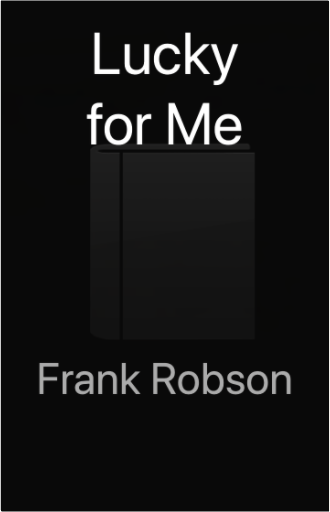
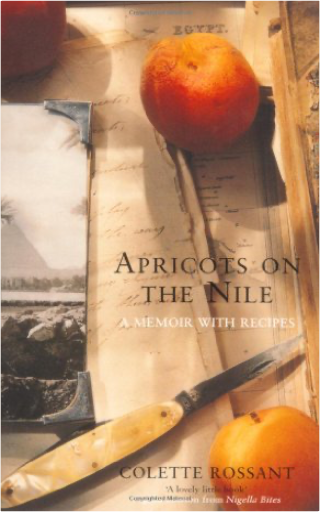

This book is the first Southern African edition of Stephen P. Robbins's Organizational Behavior, the best-selling organisational behaviour textbook worldwide. A cross-institutional team of academics and practitioners has integrated Southern African research results into the solid foundation of contemporary and classical theory provided in the original text. Retaining the comprehensive and up-to-date coverage found in the U.S. edition, this adaptation helps students understand the complex context in which Southern African organisations operate by approaching organisational behaviour from the individual, group, organisational and environmental system level. Using an outcomes-based approach, the text supports an active learning process by providing: a connection between organisational behaviour concepts and skills application, numerous skills-building exercises, practical application of theory through the use of case studies, questions for review and questions for critical thinking, team  Experience Seoul, Asia’s most intriguing city. Tour the grand royal palaces. Sing yourself hoarse in a noraebang (karaoke room). Stuff yourself with hearty beef and vegetable bibimbap. Indulge in exquisite traditional tea shops. This authoritative, bestselling guidebook will take you to the heart of Korea’s captivating capital.  Lucky for MeFrank Robson At 18months of age, Lucky a cream coloured terrior was dropped off at a vet's clinic in Queensland, abandoned by his owners. Just a week from being put down, he was adopted by Frank Robson, this is a story mateship and the joys of an independent spirit.  Apricots on the NileColette Rossant In 1937, five-year-old Colette Rossant arrived in Cairo from Paris with her Egyptian Jewish father and beautiful French mother. When her father dies Colette's flighty mother abandons the little girl to her wealthy grandparents. She soon settles into their luxuriant, food centred lifestyle - spending afternoons in the spice filled kitchen; accompanying her grandmother to the bazaar; and feasting on the delicious Egyptian food. At fifteen Colette is brought back to Paris with her mother, never to see her grandparents again, and only to return to Egypt thirty years later. In this charming, funny, and moving memoir, accompanied by mouth watering recipes, she evokes an Egypt lost, to her and to us, forever.  Harry Potter is preparing to leave the Dursleys and Privet Drive for the last time. But the future that awaits him is full of danger, not only for him, but for anyone close to him - and Harry has already lost so much. Only by destroying Voldemort's remaining Horcruxes can Harry free himself and overcome the Dark Lord's forces of evil. In this dramatic conclusion to "The Harry Potter Series", Harry must leave his most loyal friends behind, and in a final perilous journey find the strength and the will to face his terrifying destiny: a deadly confrontation that is his alone to fight. In this thrilling climax to the phenomenally bestselling series, J.K. Rowling reveals all to her eagerly waiting readers. |  From the back of the dust jacket: "The summer holidays are dragging on and Harry Potter can't wait for the start of the school year. It is his fourth year at Hogwarts School of Witchcraft and Wizardry, and there are spells to be learnt, potions to be brewed and Divination lessons (sigh) to be attended. Harry is expecting these: however, other quite unexpected events are already on the march ..." Harry Potter and the Philosopher's StoneJ. K. Rowling Harry Potter is an ordinary boy who lives in a cupboard under the stairs at his Aunt Petunia and Uncle Vernon's house, which he thinks is normal for someone like him who's parents have been killed in a 'car crash'. He is bullied by them and his fat, spoilt cousin Dudley, and lives a very unremarkable life with only the odd hiccup (like his hair growing back overnight!) to cause him much to think about. That is until an owl turns up with a letter addressed to Harry and all hell breaks loose! He is literally rescued by a world where nothing is as it seems and magic lessons are the order of the day. Read and find out how Harry discovers his true heritage at Hogwarts School of Wizardry and Witchcraft, the reason behind his parents mysterious death, who is out to kill him, and how he uncovers the most amazing secret of all time, the fabled Philosopher's Stone! All this and muggles too. Now, what are they?  Traces d'usages, qq peu défraichi mais sinon bel ouvrage.Expédition rapide de votre commande avec protection soignée de vos articles.Professionnel de la vente à distance.Professional on e-business.Fast delivery of your order.Item very well packed(réf 21g ) |

Doddridge Library
Collection Total:
417 Items
417 Items
Last Updated:
Apr 21, 2020
Apr 21, 2020


 Made with Delicious Library
Made with Delicious Library